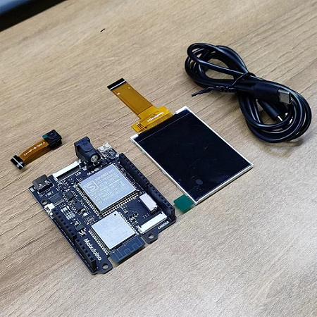
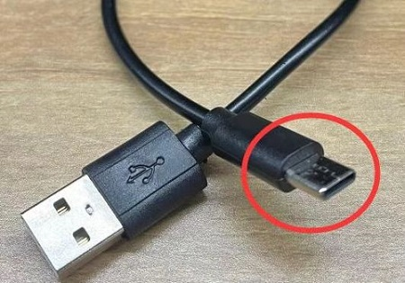
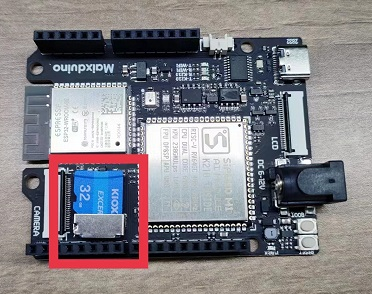
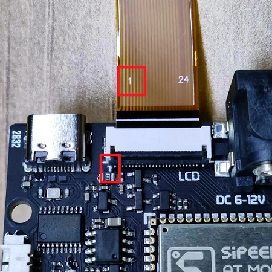
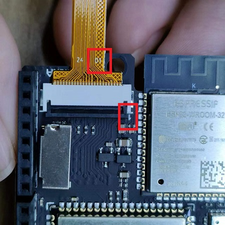
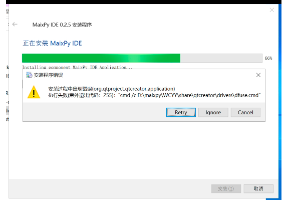
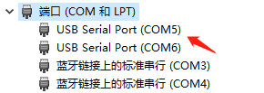
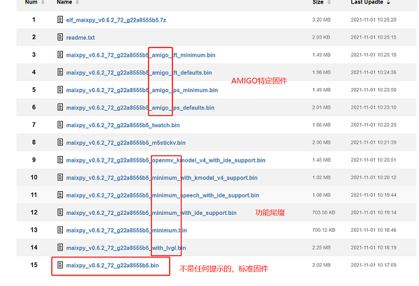
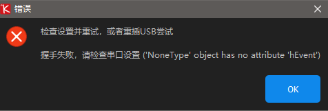

K210 上手（避坑）指南
更新历史
| 日期 | 版本 | 作者 | 更新内容 |
|---|---|---|---|
| 2022-12-30 | v0.1 | lyx |
|
前言
在 22 年的最后两天终于有时间开始整理填坑了，顶鸽逃跑（不是故意的），看见很多新手小白还是在文档海里扑腾找不到 K210 的资料文档，那就由这篇 K210 的避坑指南让小白的使用之路更顺利一点吧！
这篇文档以 SIPEED MaixDuino 的使用为示例说明，相关的介绍参数 点击 查询。

准备工作
在启动板卡运行例程之前，我们先做好以下的准备工作，避免后续踩坑影响体验感。

硬件接线
- USB Type-C 数据线
在 SIPEED 淘宝官方店购买开发板会赠送 USB Type-C 连接线，如果需自行准备的话请选用质量可靠的数据线，或者是用手机附送的数据线，质量差的数据线会因电压问题造成开发板处于非正常工作状态。

- Micro SD/TF 卡（可选）
在 K210 开发板上不使用 Micro SD 卡也可以操作文件的, 我们在内部 Flash 上保留了一部分作为文件系统, 只是 Flash 速度很慢，为了操作方便的话可以选购 Micro SD/TF 卡，以下图例为 SD 卡安装卡槽。
如何选购 SD/TF 卡传送门：点击前往

- 屏幕及摄像头接线
当我们收到开发板后，首先对硬件进行检查看有没有外表损坏，然后再根据屏幕及摄像头排线上的丝印提示把外设安装到开发板上，即排线上的数字 “1” 和板子卡座边上引脚丝印 “1” 方位对应接上。
 安装 MaixPy IDE
因 MaixPy IDE 需要一定的下载时间，我们可以提前先挂在后台下载节约小伙伴们的时间。
首先要清楚明白 MaixPy 使用 Micropython 脚本语法，所以不像 C 语言 一样需要编译，我们可以在电脑上进行实时的编辑、运行、保存、观看摄像头效果的操作，故而对新手小白比较友好。
MaixPy IDE 下载传送门：点击前往
MaixPy IDE 安装与使用例程：点击前往


FAQ：如果出现 MaixPy 软件包失败的话，卸载掉之前下的包，重新下载并换磁盘安装。

安装驱动
因 K210 没有 USB 硬件支持功能需通过 USB 转串口设备与电脑连接，所以我们需要安装串口驱动去当板子与 MAIXP IDE 连接的桥梁，接入下方提供的链接，根据板子的型号下载相对应的驱动即可。
串口驱动下载传送门：点击前往

如果出现安装失败、安装后设备接入 PC 端的设备管理器不显示 COM 端口的现象，需要检查系统是不是正版或更新下（Win7 Win8）系统，部分盗版系统会导致驱动安装失败或是安装后不显示。
更多的不显示 COM 端口参考解决方法：点击前往
升级固件
所有的板子出厂前会烧录基础固件，用户可根据需求烧录专用固件来进行进阶使用。
建议大家使用最新版本的固件，使用工具 kflash_gui 软件进行烧录。
更新固件例程传送门：点击前往

FAQ：烧录固件途中出现握手失败等报错信息，可参考以下解决方法。

一般出现这个问题，先从以下几个方面判断问题（因使用环境不同造就的设备握手失败）
- 先判断板子上电后设备管理器是否有
COM端口出现，如果没有端口出现返回安装驱动的步骤或者进行更换线材。 - 设备管理器出现
COM端口，查看是否被别的软件（串口根据、手机助手、蓝牙、外设）占用了串口，查询不出再次更换线材或重启设备也可以。 - 查看 kflash_gui 的版本（是不是太低）下载页面的配置不要改动并调小波特率。
- 烧录前按硬件的 BOOT 键后按复位，再松开 BOOT 键尝试能不能烧录。
- 尝试过以上的方法都不行的话请更换电脑设备尝试，还是不行的话请联系淘宝官方客服。
学会使用文档
为什么会写 学会使用文档 呢，众所周知 K210 系列的板卡已经是 2020 年的产物了，各方面的文档也好例程也好早已经是成熟的了，该踩的坑基本都在前几年就被踩完了，现在更多的新手小白踩坑可能都是因为性能上的不足或者是自身使用环境的乱导致出问题。这篇文档的初衷是想要让大家在使用的过程中避坑，但我们还是要学会把文档资源利用起来。
- 学会搜索并利用官方的
文档社区以及github issue资源，会让新手小白少走很多弯路雷坑。 - 文档资源在
常见问题 FAQ中基本涵盖了所有的坑，使用途中报错可以先查看这篇文档排错。 - 在使用途中出现故障但无法自行判断（代码/硬件）问题，可以先根据下文运行程序测试屏幕及摄像头。
- 想要实现更多的功能示例或需要更多的脚本源码，可前往
MaixPy的源码例程仓库查找。
文档搜索例程：点击查看
BBS 社区：点击前往
MaixPy issue：点击前往
MaixPy 常见问题 FAQ：点击查看
MaixPy 源码仓库：点击前往
MaixPy 例程仓库：点击前往
上手运行程序
在运行程序前先使用准备的 USB type-c 数据线两端分别接入板子以及电脑端。